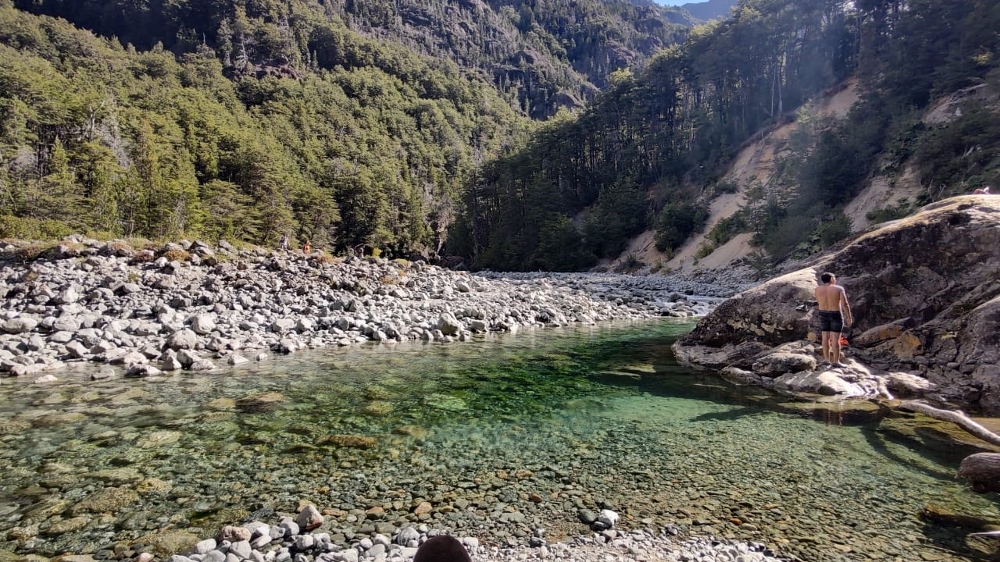

Here we meet my lifelong friends, traveling in the summer of 2022 to see southern Argentina. It really was a long and exhausting trip, we spent 15 hours traveling to the first destination.

He is my best friend, my lifelong brother. There we are in the small circuit in Bariloche. That day was quite cloudy, so you can't really appreciate the landscape.

This is one of the best places we visited on our trip. It is located in El Bolson, we had a 4 hour trek to reach a place called "La Playita". It really was a unique experience, surrounded by nature and far from the noise of big cities.